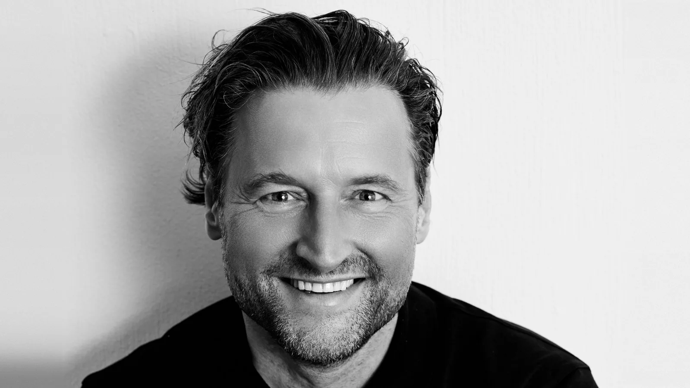
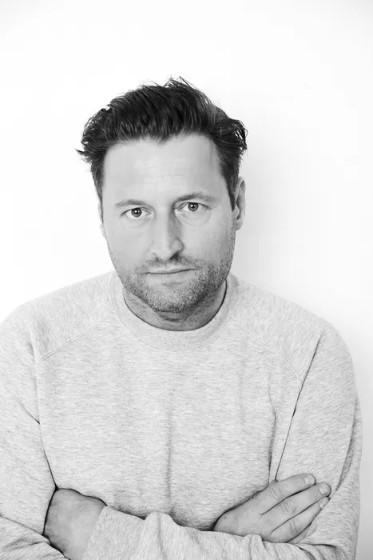

Tjebbo Gerritsma
Acteur / toneel / musical / film & tv / stem
ShowreelDe stem van Tjebbo

Acteur op toneel, in musicals, film en tv. En een stem die je vaak hoort.
Tjebbo Gerritsma studeerde in 1999 af aan de Toneelschool Amsterdam. Jarenlang hoorde hij bij de vaste cast en het creatieve team van De Toneelmakerij, met rollen in onder meer De dag dat mijn broer niet thuiskwam, De tantes, De storm en Thaibox verdriet. Hij speelde in Wie is er bang voor Virginia Woolf? en liet zijn muzikale kant zien in Annie en Fiddler on the Roof.
Op film was hij te zien in onder meer Zwartboek, Mijn bijzonder rare week met Tess, Schone handen, Bankier van het Verzet en Soof 2. In 2022 speelde hij de hoofdrol in Zomer in Frankrijk; in 2027 volgt Hanna van Hendrik. Op televisie speelde hij in Voetbalmaffia, Smeris, Toren C, Judas, Dertigers en Nieuw zeer, en recent in Maud & Babs, Tropenjaren, Ten minste houdbaar tot en Het gouden uur. Daarnaast is zijn stem te horen in commercials en voice-overs.
- Geboren
- 1972
- Lengte
- 1,83 m
- Talen
- NL, EN, DE
Portretten: Roger Neve
Plantage Middenlaan 2D
1018 DD Amsterdam
+31 (0)20 421 3669
info@allstarsagency.nl